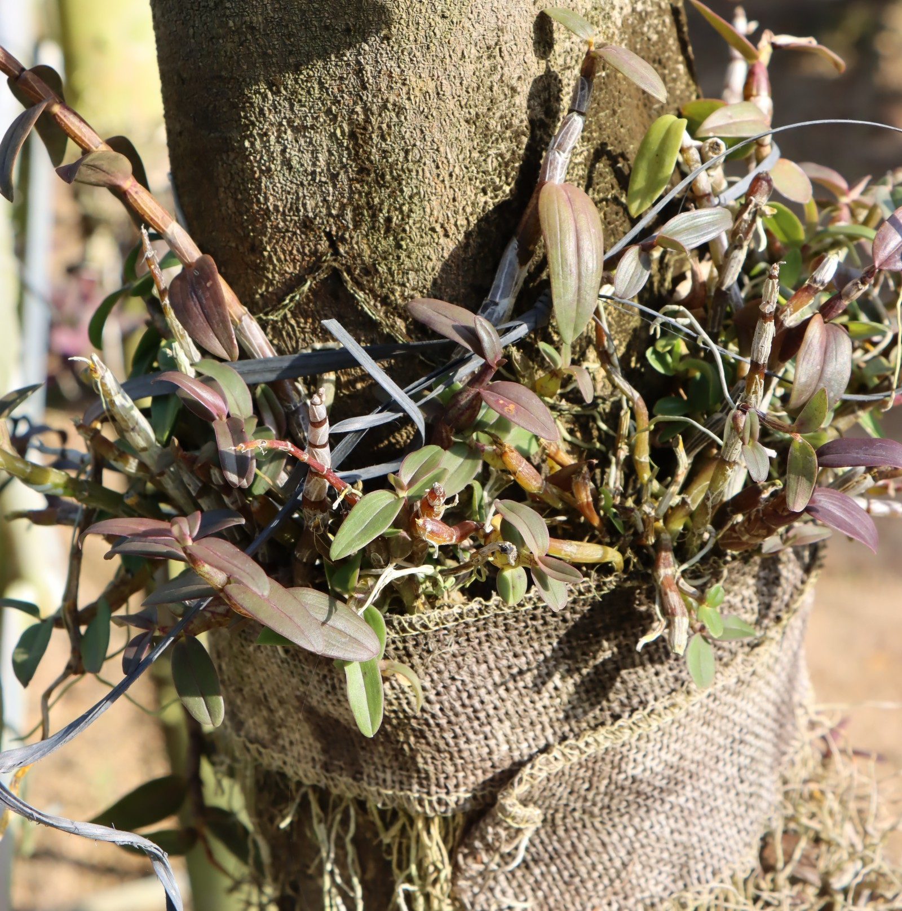

产品名称:陶河铁皮石斛
产品类型:林下菌类特色农产品/清润型食养食材
产地:广东省汕尾市海丰县陶河镇连樟村
风味特点:口感清润，植物香气淡雅，炖煮后汤水柔和
推荐做法：石斛炖鸡、石斛瘦肉汤、石斛泡水、石斛花茶、石斛甜品
适合场景：家庭食养、康养体验、乡村伴手礼、长辈礼品、农文旅展示
回到首页陶河铁皮石斛是广东省汕尾市海丰县陶河镇发展的特色农产品之一。依托当地良好的生态环境和种植条件，是当地发展特色农业和康养型农产品的重要代表。石斛植株清秀，茎条饱满，色泽青润，带有山地植物特有的清雅气息，给人一种自然、干净、温润的感受。
陶河铁皮石斛的风味清淡，入口带有植物本身的鲜润感，经过炖煮或泡饮后，汤水清透柔和，口感温润不厚重。它既可以作为日常食养食材，也适合与鸡汤、瘦肉汤、茶饮、甜品等搭配，形成清润型的地方特色食用方式。相比浓烈型滋补食材，石斛的特点更偏清雅、柔和、细水长流，适合打造具有山林气息的康养农产品形象。
在陶河的田野里，莲藕是许多人熟悉的乡土味道；铁皮石斛则让人看到这片土地发展特色农业的另一种尝试。相比一季一收的田间作物，它的种植更需要耐心：从育苗、移栽到日常管护，种植者要留意植株的生长状态，及时调整照料方式。看似安静的种植场景，背后是日复一日的观察与劳作。
过去，提起家乡物产，人们常想到餐桌上熟悉的味道。如今，陶河也在尝试让更多特色农产品走出田间、被更多人认识。铁皮石斛从一株幼苗长成可以采收的植株，再经过分拣、加工，以不同形态呈现在消费者面前。这个过程连接着种植者的经验，也连接着乡村产业发展的新机会。
石斛多糖
增强机体免疫，滋阴润燥
石斛碱
益胃生津，养护肠胃
黄酮类物质
抗氧化，润养身心
石斛麦冬茶
石斛配麦冬冲泡，清润生津
石斛炖瘦肉汤
石斛加瘦肉慢炖，温润养胃
鲜榨石斛汁
鲜条打汁直饮，清爽润养